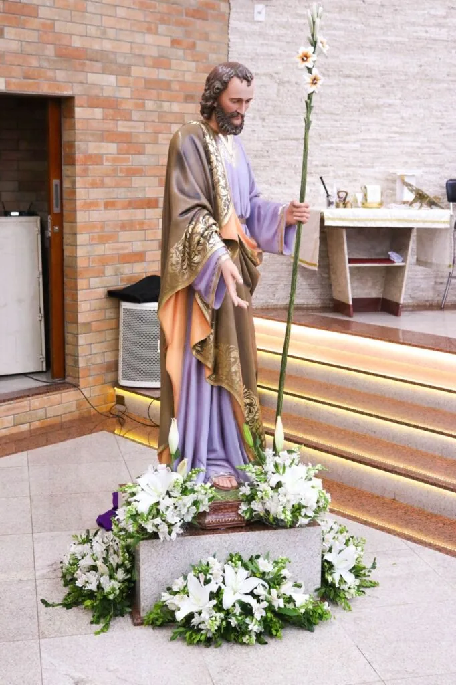
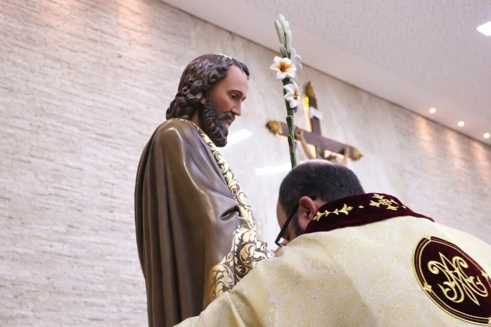

Toda quarta-feira, às 19h, celebramos a Missa Votiva do nosso padroeiro.
Em nossa paróquia, toda quarta-feira, às 19h, celebramos a Missa Votiva de São José das Mãos Piedosas, um momento especial de oração e devoção ao nosso padroeiro. A missa é uma oportunidade para os fiéis se reunirem, pedindo a intercessão de São José, um modelo de fé, humildade e trabalho.
A devoção a São José teve início oficial na Igreja Católica em 1479, quando o Papa Sisto IV introduziu sua festa no calendário litúrgico. No entanto, o reconhecimento universal veio em 1870, quando o Papa Pio IX declarou São José como Patrono Universal da Igreja Católica. Ele é também o padroeiro das famílias, dos trabalhadores, das vocações sacerdotais e das causas difíceis. Sua vida simples, mas cheia de fé, continua a inspirar milhões de fiéis ao redor do mundo.

Na nossa paróquia, temos a imagem de São José das Mãos Piedosas, uma representação única e cheia de significado. Nesta imagem, São José é retratado com a mão direita estendida, simbolizando sua acolhida e proteção, enquanto com a mão esquerda segura o lírio, que o representa como um homem honesto que confiava, obedecia e era fiel à vontade de Deus. Seu único apego era realizar os planos que Deus a ele confiou e viveu como a providência divina o quis. Muitas graças têm sido alcançadas através desta imagem, fortalecendo a fé de nossa comunidade.
Ao final de cada missa votiva, o Padre Paulinho convida os fiéis que receberam graças por meio da intercessão de São José das Mãos Piedosas a compartilharem seus testemunhos com a comunidade. Aqueles que desejarem dar seu depoimento devem procurar o padre previamente. Esses relatos são um testemunho vivo da ação de São José em nossa vida cotidiana e ajudam a todos a sentir a presença e proteção do santo em suas jornadas de fé.

Participe conosco desta devoção semanal e sinta a proteção do nosso padroeiro. Viva São José!
Ver todos os horários